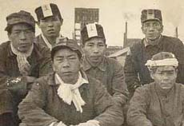

ヘルメットとキャップランプ
先の写真は、福岡の大坂間さんからいただいたものです。三池炭鉱で採炭をしていたお兄さん
のヘルメットとキャップランプだとあります。
ヘルメットの前部にはキャップランプを取り付ける金具が付いていて、そこへキャップランプを装着し、つながれたコー
ドでバッテリーに接続。そのバッテリー（約15ｃｍ×18ｃｍ大）は腰の後ろに付けておくのですが、ズシリとした重さで、
これで作業をするのは大変だったろうと思います。しかし、真っ暗闇の地の底においては、このキャップランプの灯りのみが
頼りだったのです。
キャップランプは昭和２８年頃から使われるようになり、それまでは、カーバイトのアセチレンガスを発生させて灯すガス
かんてら、油を使った油かんてらが使われていたようですが、それでは坑内ガスに引火すればひとたまりも無いということで
改良され、バッテリー式のキャップランプが考案されました。
また、ヘルメットに関しても、現在のアルミ製になったのは、昭和３０年代に入ってからとのことで、それまでは布製の作
業用帽子だったようです。

三井三池炭鉱四山鉱にて（写真提供：河口さん）
|